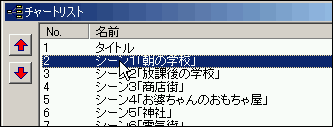
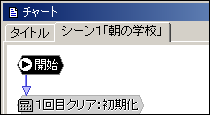
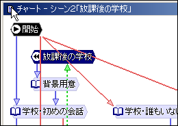
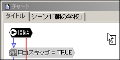
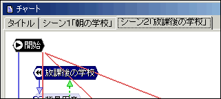
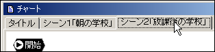
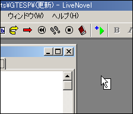
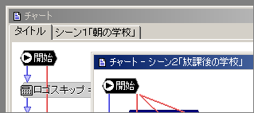
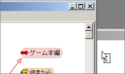
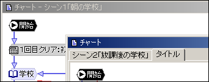

チャートリストの項目をドラッグ（マウスの左ボタンを押したまま移動する）します。

すでに開いているチャート編集ウィンドウの上にドロップ（マウスの左ボタンを放す）します。

すると、このように同じウィンドウの中にタブが作成されます。

さらに別のチャート編集ウィンドウのアイコン部分をドラッグします。

また先ほどのチャート編集ウィンドウの上にドロップします。

このように１つのウィンドウの中に収まります。

次は、タブの部分をドラッグします。

メインウィンドウの何もないところへドロップします。

すると、このようにウィンドウを分離することができます。

もう一度タブをドラッグします。

先ほど分離したウィンドウの上でドロップします。

このようにウィンドウ間で移動することもできます。